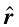

where is a unit vector from the point charge to location at which the E field is to be determined.
where μ0 is the permeability of the vacuum (free space) = 4π x 10-7 T.m/A, dl is a "current element" directed along the current in the wire and is a unit vector from dl to where the B field is to be calculated as in the diagram at right.
The law must be written in differential form since there is no such thing as a "point current". Note that a moving point charge is equivalent to a current and a stationary point charge does not create a magnetic field.

Energizer bunny arrested. Charged with battery.
Dr. C. L. Davis
Physics Department
University of Louisville
email: c.l.davis@louisville.edu